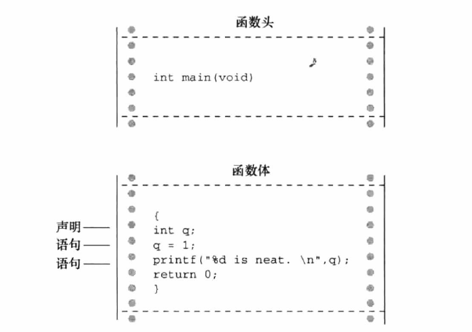
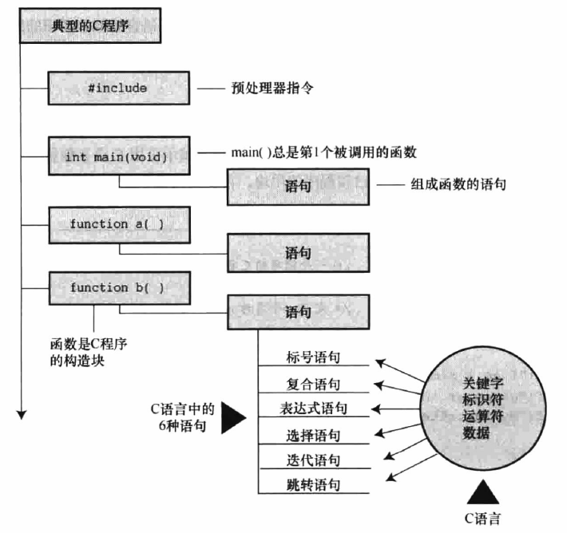

一；C语言程序的结构:
1.1；C程序的基本结构，程序由一个或多个函数组成，其中必须有main()函数（除特例情况除外），函数的结构有函数头和函数体组成。函数头包含函数名，传入该函数的信息类型，函数返回值类型。函数体是被花括号括起来的一系列语句，声明的集合。详细如下图：

1.2；经典C程序组成如图：

1.2.1；C程序示例：
1 #include<stdio.h> //指令和头文件
2 int main(void) //函数名
3 { //函数体开始
4 int num; //声明。使用一个名称为num的变量，且num是int类型
5 num = 1; //赋值
6 printf("I am a simple "); //调用一个输出函数
7 printf("computer. \n");
8 printf("My favorite number is %d because it is first. \n",num);
9 return 0;
10 } //函数体结束1.2.2；C程序示例分析：
#include<stdio.h>：#include 为C预处理器指令，#include<stdio.h>作用是将stdio.h文件中的所有内容都输入在该所在的位置。include文件提供了一种方便的途径共享许多程序共有信息。（头文件包含了编译器创建最终可执行程序需要用的信息）
main() ：C程序一定从main（）函数开始执行。
printf("My favorite number is %d because it is first. \n",num"); ：%d 相当于一个占位符，%提醒程序这个位置有一个打印变量，d表明吧变量作为十进制整数打印。